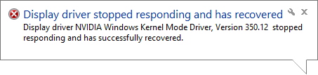

The Accelerad implementations of rpict and rtrace are intended to replace the standard versions that come with the default installation of Radiance. Before you install Accelerad:
To confirm that Accelerad is successfully installed on your computer, try running the included Windows .bat or Unix .sh files in the demo folder. Running test_accelerad_rpict should produce a high dynamic range image file named test_rpict.hdr. Running test_accelerad_rtrace should produce a tabular set of data in a file named test_rtrace.txt. Running test_accelerad_rcontrib should produce a tabular set of data in a file named test_rcontrib.txt.
On Linux and Mac, it will first be necessary to add the Accelerad bin folder to the PATH and LD_LIBRARY_PATH environment variables. It will also be necessary and to add the Accelerad lib folder to the RAYPATH environment variable. On Windows, this will be done automatically by the installer. On Linux or Mac, add the following to the end of your ~/.profile file and edit the paths as necessary if you choose a custom install location:
export PATH=/usr/local/accelerad/bin:$PATH
export RAYPATH=/usr/local/accelerad/lib:$RAYPATH
export LD_LIBRARY_PATH=/usr/local/accelerad/bin:$LD_LIBRARY_PATH
This suite contains Accelerad versions of several Radiance programs:
The Accelerad program ... |
... replaces the Radiance program ... |
|---|---|
| accelerad_rpict | rpict |
| accelerad_rtrace | rtrace |
| accelerad_rcontrib | rcontrib |
| accelerad_rfluxmtx | rfluxmtx |
| accelerad_genBSDF | genBSDF |
For Windows, these programs are installed by default to C:\Program Files\Accelerad\bin. However, different Radiance tools have different expectations about where Radiance programs will be found. Depending on the tools you use, you may need to move or rename some files. You can run Accelerad in one of three ways:
Within an application: In your applications that use one of the above Radiance programs, change the paths to refer to the corresponding Accelerad program.
Replace the original programs: If your application does not allow you to edit the Radiance application names:
From the command line: If you use Radiance from the command line, you can simply address your commands to the Accelerad programs instead of the corresponding Radiance programs. Be sure that the Accelerad bin and lib folder are found in your PATH and RAYPATH environment variables, respectively. On Linux and Mac, the Accelerad bin folder must also be found in the LD_LIBRARY_PATH environment variable.
Accelerad is designed to mimic the behaviour of Radiance and has been tested in comparison with Radiance 5.0.a.12. A number of other sources exist for the Radiance executables, including DIVA, DAYSIM, and IES VE. However, these distributions may not be updated as frequently and have not been tested with Accelerad.
Accelerad locates certain files using Radiance’s RAYPATH environment variable. The message “File <filename> not found in RAYPATH” indicates that the folder containing the required file has not been added to the RAYPATH.
In Windows, this error may occur when Accelerad is installed for all users but another Radiance installation has been performed for the current user. In this case, the current user's RAYPATH will override the system RAYPATH created for all users by the Accelerad installer.
To edit the RAYPATH in Windows, right click on My Computer > Properties > Advanced system settings > Environment Variables. The RAYPATH variable may be in either the user variables or system variables set, but should not be in both. On Linux and Mac, environment variables can be edited in the hidden ~/.profile file. Make sure that the RAYPATH variable contains paths to both the Accelerad lib and Radiance lib folders. The exact appearance will vary depending on the Radiance installations present, but a typical RAYPTH value looks like:
If you do not have Visual Studio 2013 installed on your Windows computer, you may see a message that “The program can’t start because MSVCR120.dll is missing from your computer.” You can download an installer for the missing file.
Linux and Mac computers may complain of missing .so or .dylib files if the Accelerad bin folder has not been added to the LD_LIBRARY_PATH environment variable. The path can be added by editing the ~/.profile file.
If you use a GPU that is not in Tesla Compute Cluster (TCC) mode with Windows, you may experience an unresponsive screen leading to timeout detection and recovery (TDR) while running the software. This will be accompanied by a message saying “Display driver stopped responding and has recovered” similar to the one below.
By default, the Windows OS will end processes on the GPU (essentially rebooting it) after two seconds of unresponsiveness, which can happen when the GPU is processing a large amount of data. Possible remedies include:
Accelerad is targeted toward newer graphics hardware with large numbers of compute cores; however, it is compatible with older graphics hardware with CUDA compute capability 2.0 or greater. On older hardware, Accelerad will not necessarily run faster than Radiance and may even run slower due to setup time on the GPU.
You can reproduce the normal behavior of Radiance on the CPU in Accelerad by providing the argument -g 0 to either accelerad_rpict or accelerad_rtrace. When this argument is given, Accelerad will not use the GPU for any calculations, and normal Radiance algorithms will be used.
Because ray intersection calculations on the GPU use single-precision floating point arithmetic, some imprecision is likely for geometry that is located far from the origin. In particular, this can lead to stack overflow errors, which appear as warning messages. Additionally, warnings will appear as red pixels in accelerad_rpict. Accelerad makes an effort to avoid these issues, but the result is that surfaces far from the origin may appear incorrectly. As a solution, scale the model in meters and position the model so that relevant geometry is less than 100 meters from the origin.
Accelerad flags computation errors with brightly-colored results. If you see results with much higher radiance values than expected, check the command-line output for error warnings. Most commonly, these indicate stack overflow and can be corrected by increasing the -g parameter.
Low or patchy radiance results may indicate insufficient ambient coverage. You may correct this by varying the ambient parameters, including the additional Accelerad command line arguments.
This release features an experimental version of parallel irradiance caching in accelerad_rtrace. This algorithm works well in outdoor environments, but is known to undersample diffuse lighting in many-bounce paths. To turn off irradiance caching in either accelerad_rtrace or accelerad_rpict, set the ambient accuracy -aa to zero.
Accelerad includes accelerad_rcontrib, which can be used to create bidirectional scattering distribution functions (BSDFs) by rtfluxmtx or genBSDF. However, the current versions of accelerad_rtrace, accelerad_rpict, and accelerad_rcontrib do not take BSDF files as input. Three-phase method simulations using Accelerad produce accurate results because this simulation type does not cast rays through the BSDF material. However, five-phase method simulations may produce lower illuminance results in Accelerad because interreflection of the direct solar component within the BSDF material is not taken into account.
In addition to the command line arguments typically used by rpict and rtrace, Accelerad introduces optional new command line arguments required for the GPU implementation of certain algorithms. These new parameters are summarized below:
| Argument | Description | Default Value |
|---|---|---|
| -g size | Hint to set the GPU thread stack size to size bytes. A value of zero will cause the Accelerad programs to revert to normal Radiance behavior without using the GPU. | 4096 |
| -al stride | Set the spacing between seed point pixels for ambient sampling to stride in rpict only. A value of zero will cause all pixels to be considered. This option is ignored when the -az option is used. | 0 |
| -ag N | Set number of ambient divisions for final gather infill to N. When -aa is non-zero, N ambient samples will be taken at points not covered by the precomputed irradiance cache. A value of -1 will cause the value to be copied from -ad. | -1 |
| -az res | Set the number of seeds points for ambient samples to take around the circumference of a sphere based at the view point to res in rpict only. A value of zero will cause view-dependent seeding to be used instead. Thus, zero should not be used in combination with the -S option in which a view file changes the view direction from between frames. | 0 |
| -ac N | Set the number of k-means clusters for ambient calculation to N. | 4096 |
| -an N | Set the maximum number of k-means iterations to N. Larger values can cause k-means calculation to take longer but will generate more accurate ambient results. | 100 |
| -at thresh | Set the k-means threshold to thresh. This is the fraction of seeds that must change cluster in order for k-means iteration to continue. Smaller values can cause k-means calculation to take longer but will generate more accurate ambient results. | 0.05 |
| -ax wt | Set the weighting factor for position in k-means error calculation to wt. Small values concentrate more ambient calculations around edges where ambient gradients are likely to be large. | 1.0 |
| -t sec | Set the time between progress reports to sec. Fractional values of sec are supported and support is added for rtrace. A value of zero turns automatic reporting off. | 0.0 |
The purpose of this project is to demonstrate the feasibility of performing Radiance-style simulations on the GPU by implementing a variety of commonly-used simulation and material parameters. This section lists the status of Radiance parameters and objects in Accelerad according to the following key:
The table below lists currently supported parameters. Unsupported parameters will be ignored. Hover over a parameter for details.
The status of each of the Radiance object types are listed below. Unsupported surface types, textures, and patterns will be ignored. Surfaces assigned unsupported materials will also be ignored. Hover over a type for details.